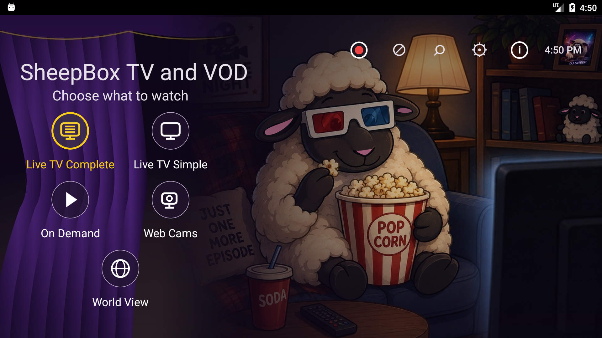
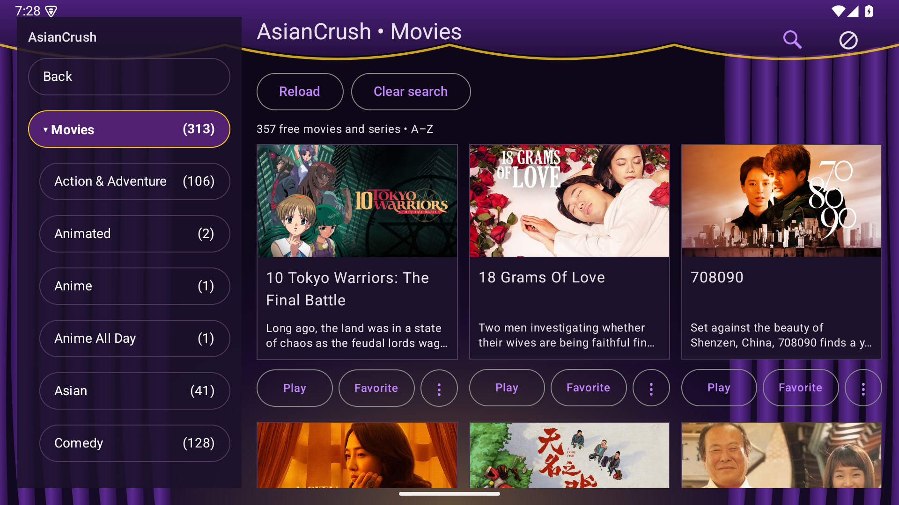

Inside SheepBox
Screenshots from the 1.9.0 release-candidate series. Select an image to view it full size.




What SheepBox does
SheepBox brings free streaming services together in an Android TV and Google TV app with shared browsing, search, favorites and remote controls.
Supported providers
The following providers are included in 1.9.0 stable. Availability varies by region, device and current free offer.
| Provider | Live TV | On Demand |
|---|---|---|
| IPTV-org | Free-to-air lists by country and genre | — |
| Pluto TV | Yes | Movies & shows |
| Samsung TV Plus | Yes | — |
| LG Channels | Yes | — |
| Plex | Yes | Movies & shows |
| Roku Channel | Yes | Movies & shows |
| Tubi | Yes | Movies & shows |
| Xumo | Yes | Movies & shows |
| Sling Freestream | Yes | Free movies & shows |
| YuppTV Free | Free lineup | — |
| Fawesome | Yes | Movies & shows |
| AsianCrush | — | Free movies & shows; native playback |
| Midnight Pulp | — | Free movies & shows; native playback |
| Haystack News | — | Current clip selections using the official player; not the full archive |
| Runtime | Guest regional channels and guide | Movies, series and family titles; incomplete counts marked + |
| PBS KIDS | — | Currently listed episodes, movies, clips and shows |
| Popcornflix | — | Guest movies & shows |
| Local Now | Yes | Movies & shows |
| STIRR | Yes | Movies & shows |
| Zeam | Guest stations and guide | Featured-publisher hosted episodes and VOD recordings |
| Shout! TV | Free guest lineup | Free guest movies & shows |
| TCLtv+ | Free guest lineup and guide | Movies by category |
| wedotv | Free guest lineup | Movies & shows |
| Cineverse | All Channels A–Z | Movies & shows |
| Filmzie | — | Guest movies & shows |
| The CW | Guest lineup and guide | Guest movies & shows |
| Free Live Sports | Guest sports lineup and guide | Guest movies & shows |
| FilmRise | — | Movies & shows; some guest categories remain incomplete |
| NewsON | Guest live and AlwaysON stations | Recent newscasts and clips by state and station |
| NFB | — | Free regional films and collections |
| Canela.TV | Guest regional lineup and guide | Free movies & shows |
| RetroCrush | — | Free guest movies and eligible show episodes |
| FlixHouse | Supported guest lineup and guide | Free guest movies and eligible episodes |
| DOCUMENTARY+ | Supported guest lineup and guide | Free movies and eligible episodes |
| Red Bull TV | Continuous sports channels and available live events | Regional films, replays, clips and series |
| NASA+ | Continuous channel; no mapped programme schedule | Standalone videos and series |
| Internet Archive | SheepBox-created collection channels | Public-domain / Creative Commons films, classic TV and shorts |
Also available in 2.0.0-RC11
| Provider | Live TV | On Demand |
|---|---|---|
| Philo Free | Free channels | Free movies & shows; native playback |
| CDNLive | Public directory and sports-channel references; native player with in-stream ads and TV remote controls; browser popup ads omitted; manual external guide mapping; recording unavailable | — |
| FreeTV | Guest regional channels and guide | Free movies & shows; native playback |
| PBS | — | Free regional episodes, including Popular shows; Passport excluded |
| Revry | Two guest channels and guide | Free movies, shows, episodes and clips; premium offers excluded |
| BYUtv | — | Audited US/English guest videos; live, account-gated, future-only and BYUradio offers excluded |
A supported provider does not guarantee every title or feature. FilmRise and some other catalogues have incomplete counts marked +; Haystack and Zeam have limited catalogue scopes. Captions, recording, resume and autoplay depend on the source. Provider coverage and limitations.
Roadmap
Provider additions are paused while we test and improve the existing 2.0 experience, including playback reliability, first-load caching, captions and TV remote navigation.
These features have no committed dates. Record by name in RC11 searches guide titles and descriptions as listings arrive: search your loaded guide and saved supported catalogues from Recordings. Choose one airing, a series on that channel, or a supported On Demand episode. Channels need programme metadata to be found by show name. View the roadmap.
Web preview
Open SheepBox Web in a desktop or mobile browser for live listings, On Demand, webcams, World View, search and favorites. Coverage differs from Android and some selections are partial. Philo, Fawesome and Roku open their official players in a new tab; return to SheepBox to continue browsing. Browser, account and region requirements are determined by the publisher.
Install and update
Requires Android 6.0 or later, designed for Android TV and Google TV.
- Download the stable APK to your TV or streaming device.
- In Android settings, allow your chosen downloader or file manager to install apps.
- Open the APK and follow Android's installation prompts.
- Start SheepBox. On Demand catalogues load when first opened and use saved metadata caches on later visits.
For updates, use Settings > App updates > Check now > Update now. Enable Include test versions for release candidates. Keep the existing app installed to retain settings, favorites and history.
Availability and support
SheepBox is independent and is not affiliated with its listed providers. It hosts no video. Streams come from providers' free offers, free-to-air directories and public-domain or Creative Commons collections. Provider advertising, access restrictions and normal content protection remain in place.
Catalogues change and some streams may be unavailable or temporarily fail. Refresh or retry the provider before reporting a problem. Include the app version, device model, provider and title, without account details or private playback links. Suggest an improvement with the Feature request form.